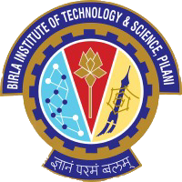
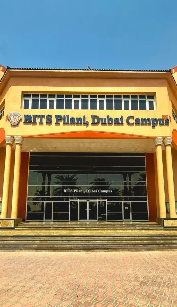

Here at Bits we have
The Birla Institute of Technology & Science, BITS Pilani, is an all-India Institute for higher education. The primary aim of BITS is to "train young men and women able and eager to create and put into action such ideas, methods, techniques, and information". The Institute is a dream come true of its founder, the late Mr G.D. Birla, an eminent industrialist, a participant in the Indian freedom struggle, and a close associate of Mahatma Gandhi.
What started in the early 1900s as a small school has blossomed into a set of colleges for higher education, ranging from the humanities to engineering.
In 1964, all of these colleges amalgamated to form a unique Indian university of international standing,
christened the Birla Institute of Technology and Science, Pilani, known to many as BITS, Pilani.Over the years,
BITS has provided the highest quality technical education to students from all over India admitted on the basis of merit.
Its graduates can be found worldwide in all areas of engineering, science, and commerce. BITS symbolises the maturing of Indian technical ability and "can-do" entrepreneurial spirit, especially as derived from the private sector. BITS is located in the Vidya Vihar campus, adjacent to the town of Pilani in Rajasthan.